№ 61–80
Перекуси
солоне й солодке
✓ 2 рецепти розділу відкриті безкоштовно · 🔒 решта — за підпискою 300 грн/міс (фото й КБЖВ — для всіх)
20 з 20
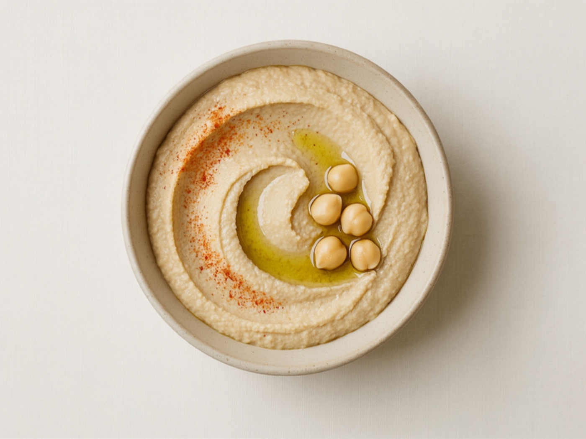
Перекуси · № 061★
Хумус

Перекуси · № 062★
Гуакамоле
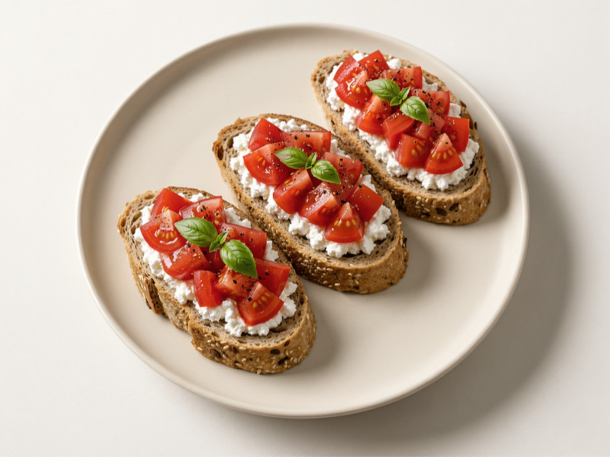
Перекуси · № 063★
Брускета з томатами
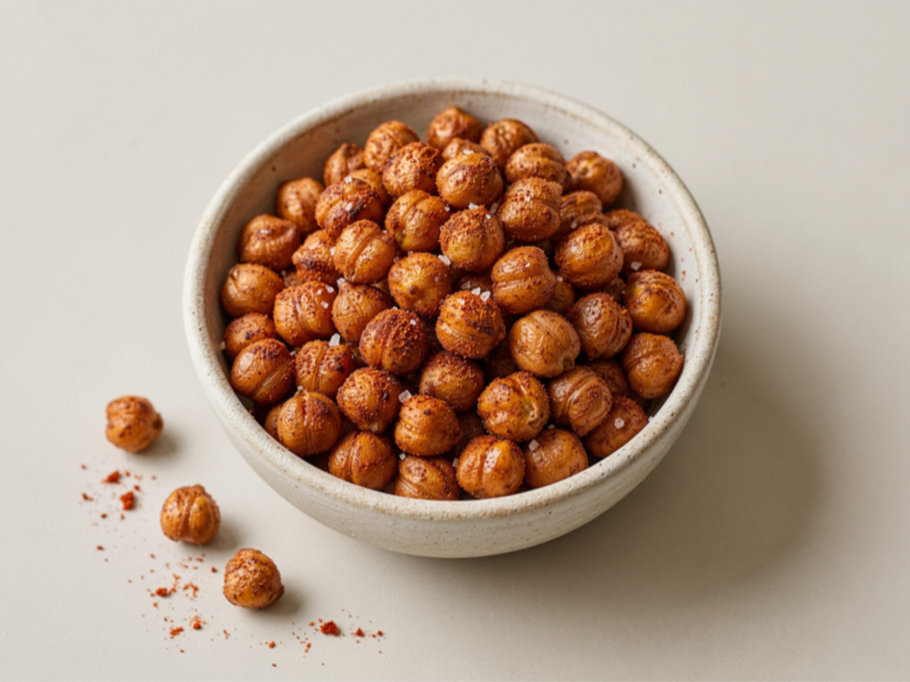
Перекуси · № 064★
Хрусткий нут з паприкою
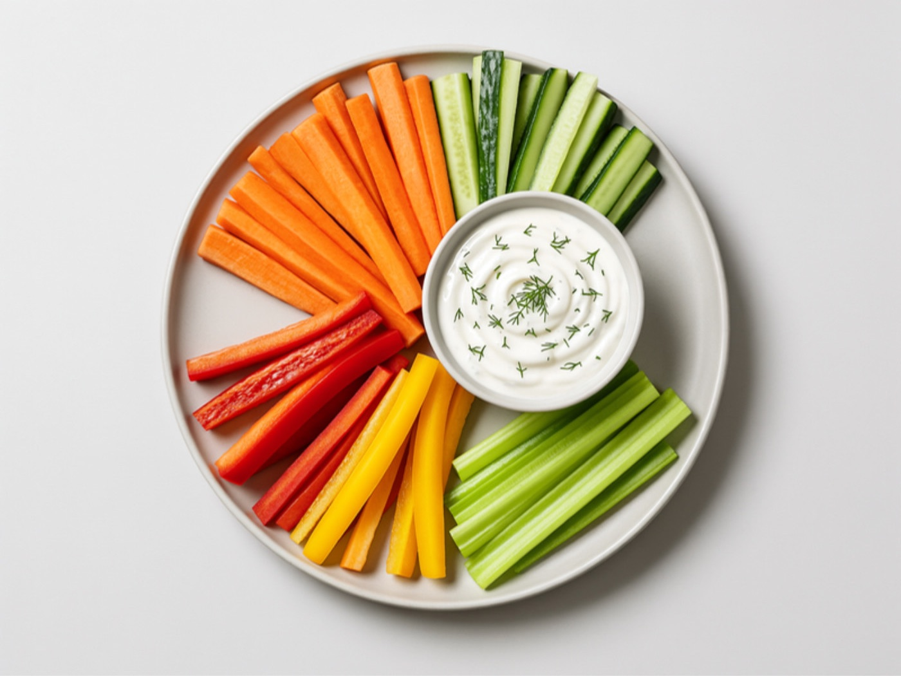
Перекуси · № 065★
Овочеві палички з йогуртовим дипом
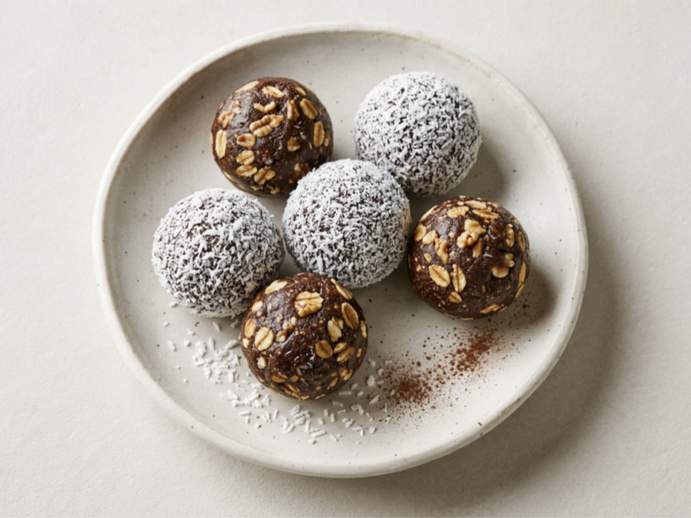
Перекуси · № 066★
Енергетичні кульки з фініками
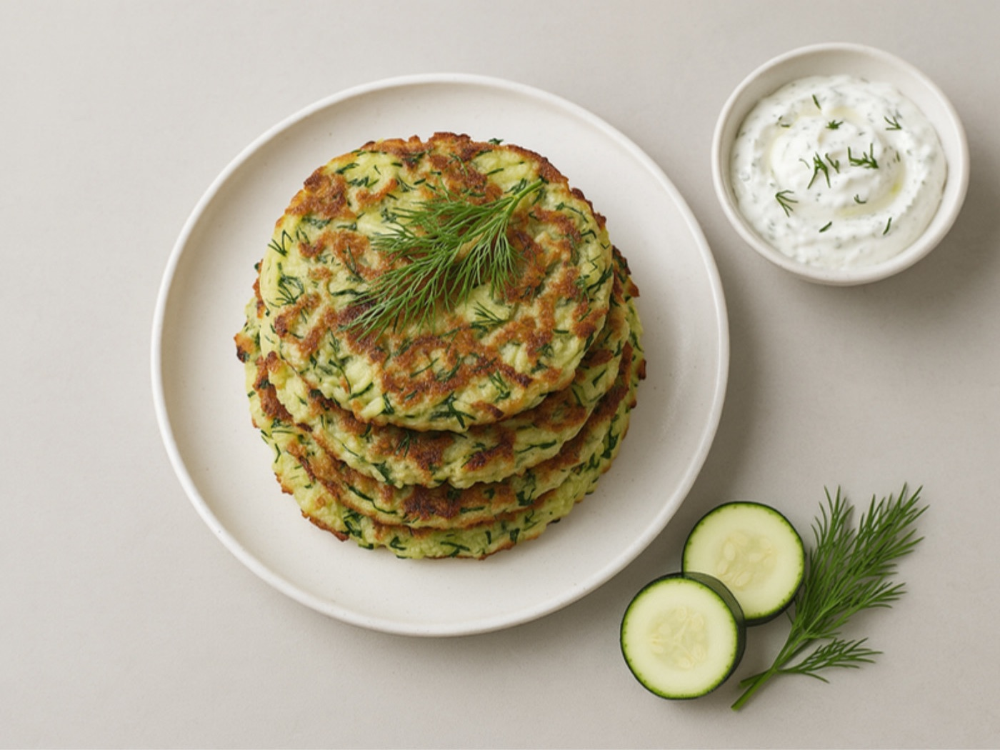
Перекуси · № 067★
Кабачкові оладки
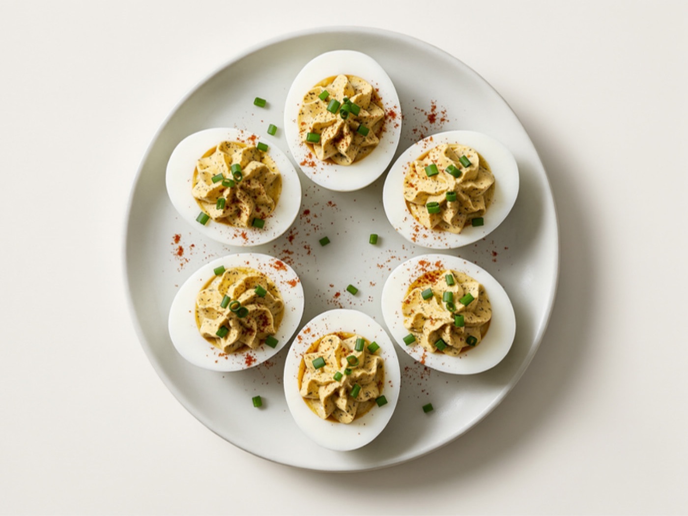
Перекуси · № 068★
Фаршировані яйця
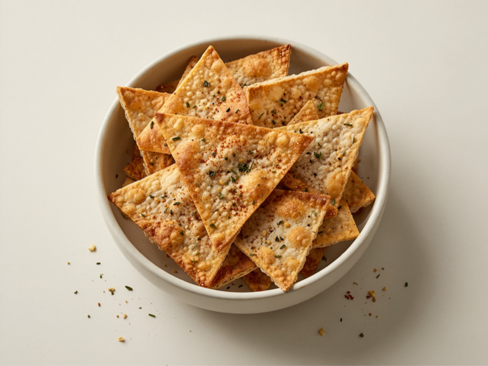
Перекуси · № 069★
Чипси з лаваша з часником

Перекуси · № 070★
Банановий хліб

Перекуси · № 071★
Вівсяне печиво

Перекуси · № 072★
Намазка з бринзи і зелені

Перекуси · № 073★
Попкорн з пармезаном і травами
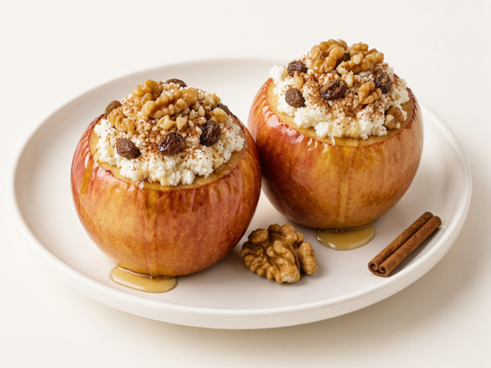
Перекуси · № 074★
Яблука, запечені з медом

Перекуси · № 075★
Фруктовий салат з м’ятою
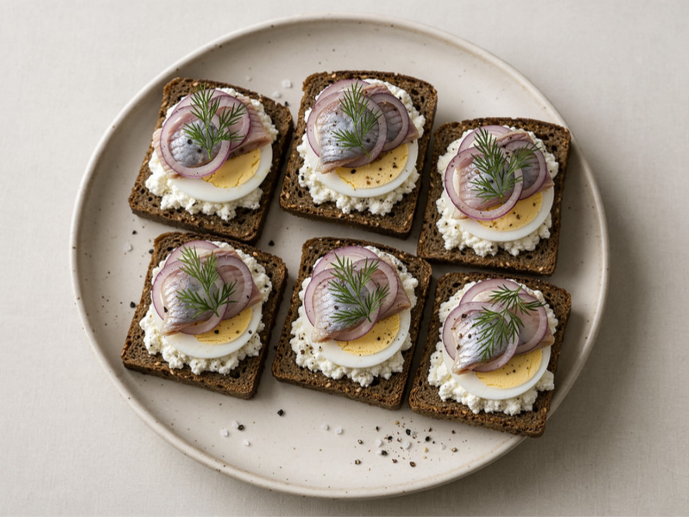
Перекуси · № 076★
Канапки з оселедцем
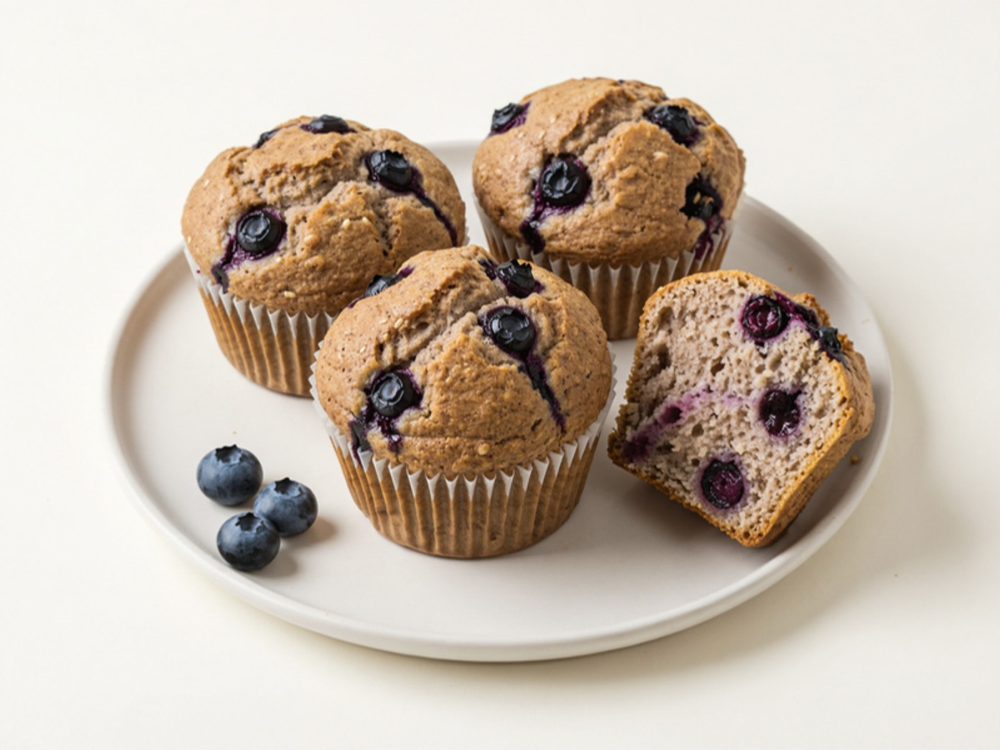
Перекуси · № 077★
Кекси з чорницею
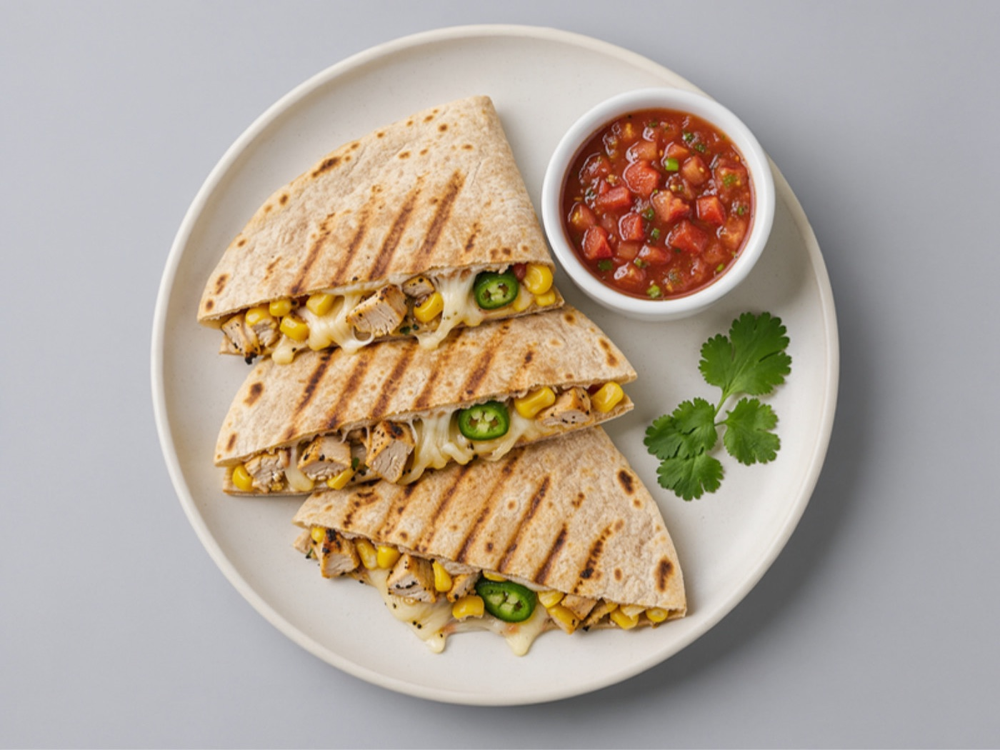
Перекуси · № 078★
Квесадилья з сиром
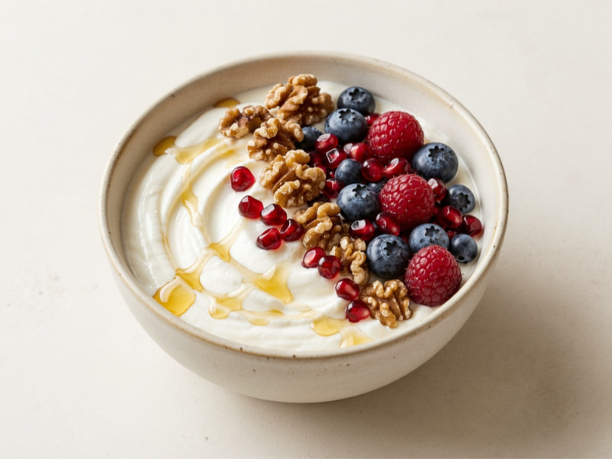
Перекуси · № 079★
Грецький йогурт з медом і горіхами
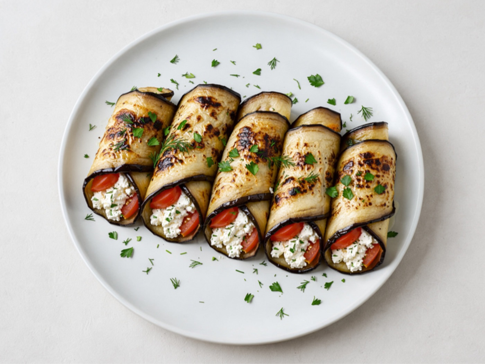
Перекуси · № 080★